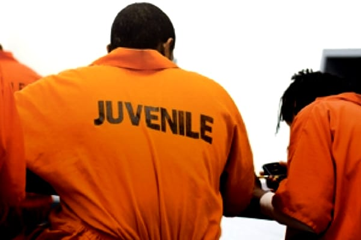
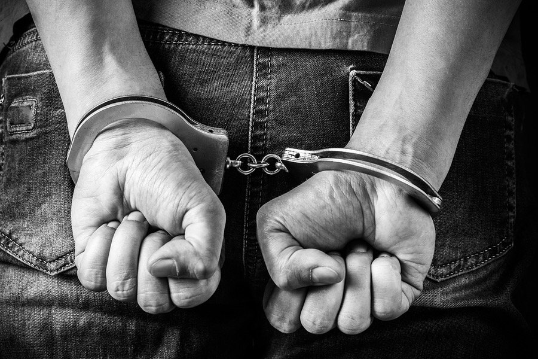
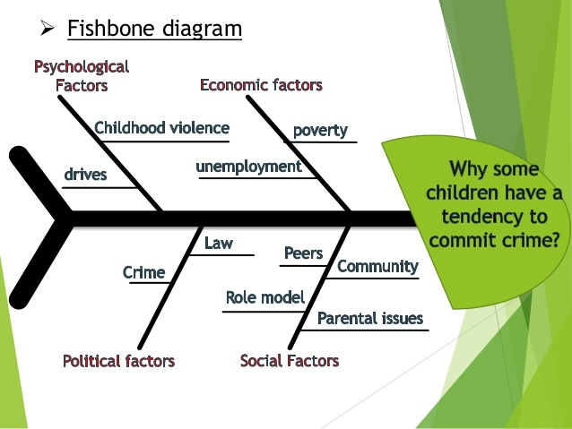
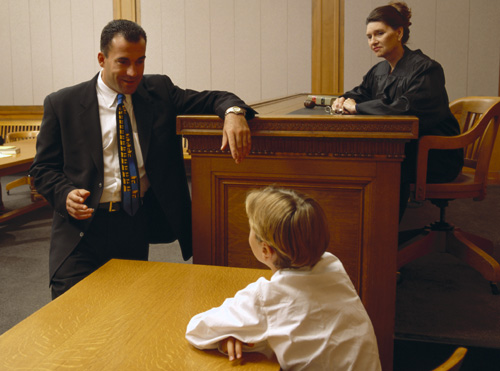

The Young and The Barred
Juvenile Drug Arrests

Getting caught with drugs or alcohol when you’re underage is reason enough for a young person to face legal trouble. Possession, public intoxication and buying or selling substances is often how many teens first cross paths with law enforcement. Research shows that substance use increases a teen’s likelihood of a prolonged interaction with the juvenile justice system. The earlier a child begins abusing drugs or alcohol, the greater their probability of serious and persistent criminal behavior.
Juvenile Drug Arrest Statstics
- 44% of teens arrested for burglary attribute their crime to needing money for drugs
- 1 of 3 teens arrested for assault attribute their crime to being high or drunk
- 29% of chronic violent offenders regularly use amphetamines
- 4 out of every 5 juvenile offenders are under the influence while committing their crimes, test positive for drugs, admit having substance problems, are arrested for committing an alcohol or drug offense, or they exhibit some combination of these characteristics
- 85% of juvenile offenders admitted buying drugs
- 55% of juvenile offenders reported selling drugs
- 46% of juvenile offenders were under the influence of alcohol at the time of their arrest
- 67% of juvenile offenders use 1 or more substances on a daily basis — 72% of these individuals report committing crime between 3 and 7 days each week
- At the time of arrest 75% were under the influence of marijuana
- At the time of arrest 39% were under the influence of amphetamines
Effect Of A Criminal Record

A juvenile record can appear on background checks long into a teen’s adult years. If arrested as an adult, these juvenile records can result in longer periods of incarceration. Court costs or legal fees associated with a teen can become a major plight for not only them but their family as well. This can send a teen into serious debt and possibly hurt their credit in the future by setting limitations.
Juvenile Criminal Record Can Affect
- Employment Opportunities
- Eligibility for public housing
- Joining the military
- Driving Privileges
- Re/admission to school
- Financial aid for college
The Beginning Of Trouble

In all too many cases, a young person’s life of crime stems from a difficult upbringing. In addition to difficulty in school or at home teens who engage in criminal behavior are often struggling with severe emotional or psychological issues.
Where Does It Begin?
- Around one-third of juvenile offenders endured emotional or violent abuse
- Around one-fifth of offenders were left alone for long periods of time
- Approximately two-thirds of offenders say a member of their family abused substances while they were growing up
- 42% of young offenders were not living with their parents at the time of their last offense
- 75% of these kids did not continue their education past grade 7, 8 or 9
- Almost half of juvenile offenders were suspended from school regularly, and 6 out of 10 had been expelled
Psychological or Emotional
- Two-thirds of juvenile offenders report symptoms of depression, anxiety or high aggression
- 27% of incarcerated youth have severe mental illness — 2–4 times higher than the national rate
Common Teen Charges

Some of the crimes most committed by teens can range from misdemeanor unauthorization of a vehicle to felony theft charges. The following offense are ones that have an acceptance percent of 50 and above in juvenile criminal court:
- Theft/Larceny 91%
- Vandalism 76%
- Alcohol offense 73%
- Simple assault or battery 73%
- Disorderly conduct 67%
- Possession of Marijuana 60%
- Tobacco offenses 59%
- Curfew violations 50%